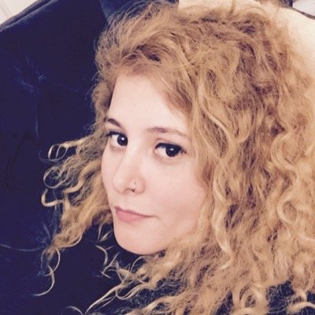

<div class="c-speaker">
    <div class="l-grid">
        <div class="l-grid__col--lg-4">
            <figure class="c-speaker__image">
                
            </figure>
        </div>
        <div class="l-grid__col l-grid__col--lg-8">
            <h3 class="c-speaker__name">Meryem Alayk</h3>
            <p class="c-speaker__description">
				İstanbul Bilgi Üniversitesi Bilgisayar Bilimi mezunuyum. Uzun zamandır yazılım geliştiriciliği yapıyorum. Özgür yazılımın gönülden destekçisiyim. Bildiklerimi başkalarıyla paylaşmaktan, ekip çalışmasından ve problem çözmekten çok hoşlanıyorum.
            </p>
            <ul class="list-unstyled c-speaker__social">
                <li class="c-speaker__social__item"><a href="https://www.facebook.com/kozilife" target="_blank"><i
                        class="fa fa-facebook"></i></a></li>
                <li class="c-speaker__social__item"><a href="https://github.com/koziLife" target="_blank"><i
                        class="fa fa-github"></i></a></li>
                <li class="c-speaker__social__item"><a href="https://twitter.com/kozilife" target="_blank"><i
                        class="fa fa-twitter"></i></a></li>
            </ul>
        </div>
    </div>
</div>
